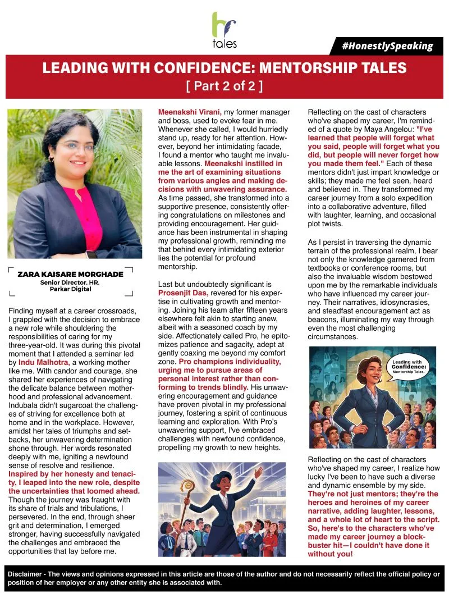
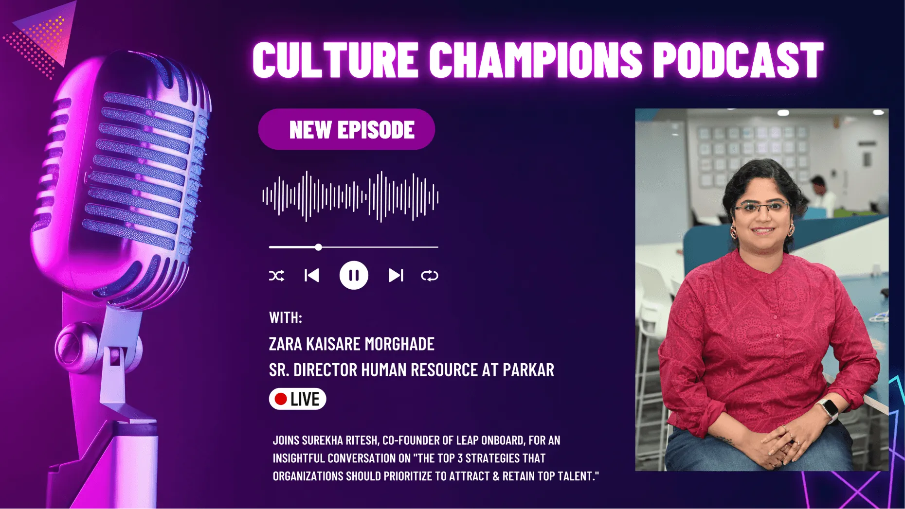
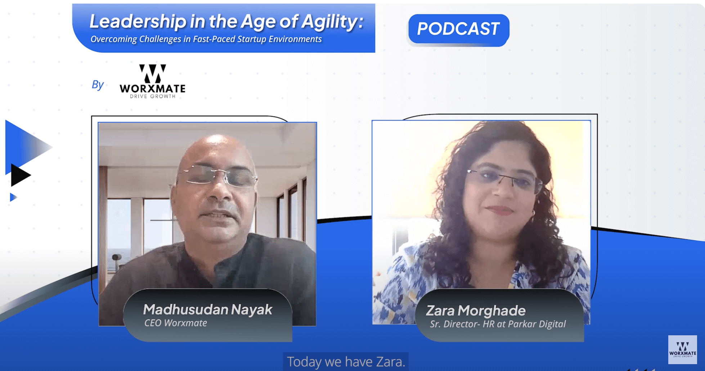
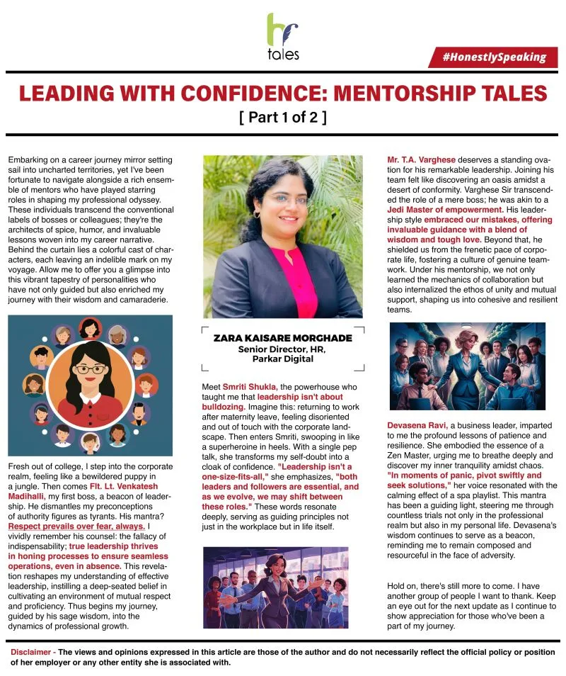
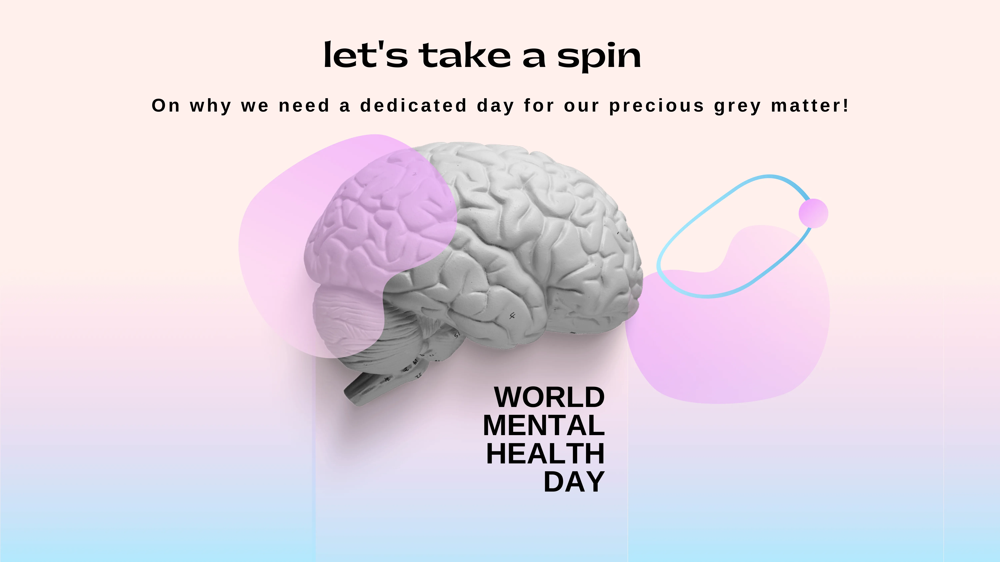

Blogs
Expert perspectives on AI, cloud, data, and IT operations — built for leaders who ship to production, not just to pilot.
The Distance Between Pilot Success and Production Failure Is Smaller Than You Think
Read More
Data Version Drift Is Breaking AI Forecasting in Supply Chains
Read More
The AI Budget Got Approved. So Why Is Nothing Live?
Read More
The Readiness Gap: How Poor Data and System Readiness Kills Enterprise AI
Read More
AI Use Cases for Enterprise: A Prioritisation Framework Every CIO Needs
Read MoreThe Three Gaps Every Enterprise AI Leader Misses — And the Operating Model Built to Close Them
Read More
Why 95 of Your ML Models Never Reach Production
Read More
The Architecture That Frees Your Data Engineering Team
Read More
When Fraud Monitoring Becomes Manual Triage
Read More
Alert Fatigue is a Data Architecture Problem
Read MoreThe Customer Data Problem Banks Can't Engineer Their Way Out of
Read More
Nothing Triggered an Alert That's What Triggered the Investigation
Read MoreWhen Cloud Breaks Patients Wait Why Healthcare Leaders Can't Ignore AI Infrastructure
Read More
What Makes an AIOps Platform Truly Unified Uncover the 5 Non Negotiables
Read MoreEnterprise AI and the Problem of Split Accountability
Read More
Your AI Agents Outnumber Your Employees Who's Managing Them
Read More7 Reasons CIOs Should Stop Piloting AI and Start Owning the Outcomes
Read More
Generative AI in Data Engineering Unlocking Potential with Databricks and Azure 2
Read MoreLanding Zones Are the New Cloud Playbook Here's How They Accelerate Enterprise Grade Transformation
Read MoreReducing Alert Noise in ITOps What Actually Works and What Doesn't
Read More
Theres no Observability Without Ownership and That's Why You Are Stuck
Read MoreML Projects Don't Die in Jupyter They Die in Your Data Pipeline
Read More
Your AIOps Strategy is Just Fancy Alerting with a Bigger Bill
Read More
You Can't Hire Your Way Into GenAI You Have to Engineer Your Way in
Read More
India's GCCs Are Building for Scale But Are They Building for Intelligence
Read MoreObstacles to Succeeding with GenAI for India's GCCs
Read MoreFrom Fragmentation to Consolidation the Case for Unified Monitoring in Multi Cloud Environments
Read More
Why Your Data Lake Could Become a Swamp and How Data Engineering Can Save It
Read More
Data Mesh in Action Leveraging Azure Synapse and Databricks for Decentralized Analytics
Read More
From Data Silos to Data Synergy Achieving Unified Insights with Modern Data Pipelines
Read MoreHow to Use the Power of GenAI to Drive AIOps in India's GCCs
Read More
GCC India Focused Synergies of AIOps and GenAI in Unleashing Productivity and Performance
Read More
Custom Copilots How Enterprises Can Build Their Own AI Dev Assistants 2
Read More
What Can India's GCCs Do to Win with GenAI
Read MoreAIOps the Secret Weapon of GCCs Winning the Application Performance Battle
Read More
What Happens After You Build Your Software Platform
Read More
GenAI Opportunities for India GCCs to Enhance Efficiencies and Accelerate Innovation
Read MoreWhy Your Enterprise Needs a Unified Data Fabric Strategy Now
Read More
Why Cloud Native Security Needs to Start at the Design Phase not After Go Live
Read MoreLow Code vs. Cloud Native Finding the Right Balance for Your Application Strategy
Read More
Cloud Native Microservices the Backbone of Scalable Enterprise Applications
Read More
Observability Trends Moving Beyond Monitoring to Actionable Insights
Read MoreBest Practices for Building and Using Cloud Native Solutions
Read More
The Essential Guide to Choosing Between Snowflake and Databricks for Enterprise Data
Read More
The Challenge with Acquiring Real Time Insights at Scale and How Microsoft Fabric Lakehouse Can Help
Read More
Application Modernization Trends Themes and Opportunities
Read MoreHow to Build SaaS Applications in the AI Age
Read MoreEnterprise Digital Transformation the Azure Way
Read More
Application Performance the Infrastructure Dimension
Read More
Leading with Confidence Mentorship Tales
Read MoreUnder the AI Hood the Data Engine That Drives AI Success
Read More
Culture Champions Podcast
Read MoreCloud Infrastructure Trends Threats and Themes for Enterprise CIOs
Read MoreCulture Champions Podcast 2
Read More
Navigating the Future Modern Leadership Talent Management and the AI Revolution
Read More
How to Encourage Your Team to Speak Up
Read More
Mastering Azure Cost Optimization a Guide to Maximizing ROI and Efficiency
Read More
Leading with Confidence Mentorship Tales 1
Read MoreSnowflake Cost Optimization Strategies for Efficient Data Management in 2024
Read MoreData Engineering Pipelines Building Seamless Workflows on Azure and AWS
Read MoreElevate Your Game
Read More
Simplified Microservices Development with Azure Kubernetes Service AKS
Read More
Observability in DevOps Streamlining Insights with Azure Monitor and AWS Cloudwatch
Read MoreUnderstanding RAG and Prompt Engineering in Manufacturing 2
Read More
Finding Your Competitive Sweet Spot at the Workplace
Read MoreBeing Easy to Work with is an Often Overlooked Career Skill
Read MoreRevolutionizing Healthcare Digital Innovations with Azure for Patient Centric Care
Read MoreSupply Chain Analytics Driving Efficiency with Azure Synapse in 2024
Read MoreMentor by Your Side
Read More
Automating Data Pipelines Streamlining Analytics with Azure and AWS
Read MoreUnlocking Succession Planning Success in a Startup Culture
Read MoreLow Code Development Platforms Driving Agility with Azure SaaS Solutions
Read MoreLead and Cultivate a Culture of Inspiration not Just Motivation
Read More
Fostering Dialogue and Shared Responsibility Understanding Employee Dissatisfaction and Layoffs in Organizations
Read MoreData Mesh vs. Data Fabric Decentralizing Insights with Databricks and Azure
Read More
The Digital Engineering Ecosystem Explained Unlocking Scalability with Azure in 2024
Read MoreIntegrate Companies with Integrating People and Culture
Read More
Embrace World Mental Health Day
Read More
Building and Growing an Organization Achieving Long Term Success
Read MoreDelivering Excellence Digital Quality Assurance with AWS Driven Automation
Read MoreAgile and DevOps Debunking Myths and Driving Excellence with Azure Pipelines
Read MoreTake the next step for your business
Take your business further with our expert solutions. We're here to help you grow and succeed. Let's move forward together!
Get started